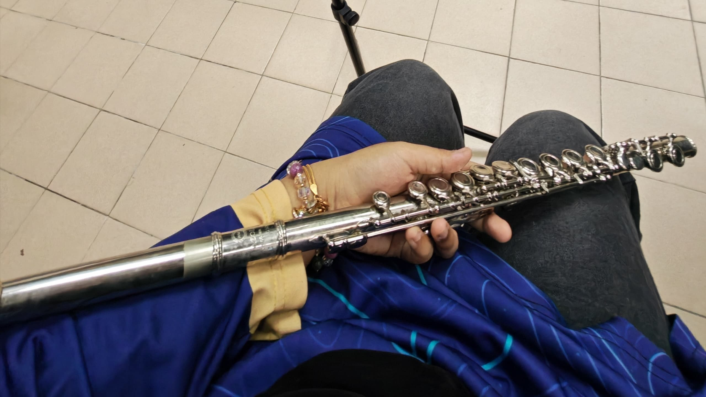

Actuarial Science Student
An Actuarial Science student with a love for mathematics, problem solving, and analytical thinking.
Actuarial science · data · innovation
Exploring the intersection of actuarial science, analytics, artificial intelligence, business intelligence and technology through projects, leadership and continuous learning.
📍 Puchong, Selangor, Malaysia
🎓 UiTM Shah Alam| Bachelor of
Actuarial Science (Hons.)

Get to know me

Get to know me

Get to know me

Get to know me

Get to know me


Currently
I am currently pursuing a Bachelor of Actuarial Science (Hons.) at UiTM, where I am strengthening my foundation in probability, statistics, financial mathematics and risk management. Alongside my degree, I am developing practical capability in Excel, Power BI, SQL, Python and data storytelling, while exploring AI-assisted development and technology-enabled business solutions. Beyond the classroom, I take on leadership, event-management and volunteering roles that strengthen how I communicate, organise work and contribute within diverse teams.
A few things about me
An Actuarial Science student with a love for mathematics, problem solving, and analytical thinking.

Plays the flute occasionally as a brass band member at UiTM Shah Alam.

Exploring AI-assisted development through hands on projects.

A creative at heart with skils ranging from cooking and crocheting to making faux flowers, DIY bracelets and keychains.

Enjoy volunteering as a tutor and mentor, helping others understand something they once found difficult.

Always seeking opportunities beyond UiTM through competitions, camps, volunteering, and external programmes.
What I’m exploring
Power BI · Excel · Data Visualisation · Business Intelligence · SAP Analytics Cloud
AI Tools · React · APIs · Full-Stack Foundations · Cloud Technologies
Event Management · Committees · Volunteering · Teamwork · Communication
Featured projects
Innovation · biometric payment concept using iris-recognition authentication.
Fintech
Security
Innovation · IoT-enabled waste collection, filtration and environmental monitoring concept.
IoT
Sustainability
Innovation · Arduino-supported seed-paper production concept from recycled paper.
Automation
Circular design
Selected experiences
Director role for a national competition under Actuarial Science Club (UiTM Shah Alam).
Committee and community roles within UiTM and external organizations.
Academic development alongside club and mobility involvement.
Founder experience running a handmade bouquet business.
Credentials preview
Highlights
Dean’s List, UiTM
University of Malaya
Featured in the portfolio
Let’s connect